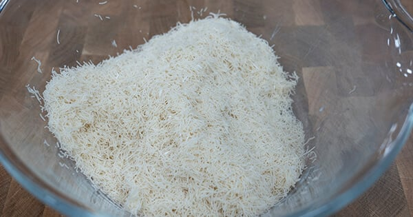
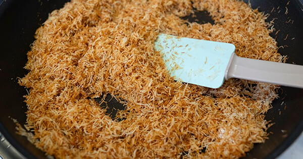
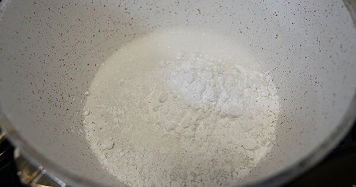
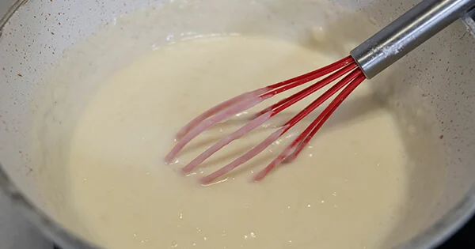
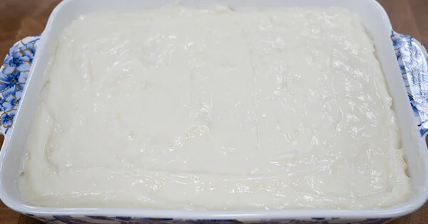

LEZİZ TARİFLERDEN MERHABA
Ana Sayfa
Hakkımda
Anayemek
Makarna
tatlı
KREMASIZ KADAYIFLI MUHALLEBİ:
| KAÇ KİŞİLİK |
HAZIRLANMA SÜRESİ |
PİŞİRME SÜRESİ |
| 6 Porsiyon |
15 Dakika |
30 Dakika |
Kremasız Kadayıflı Muhallebi Tarifi İçin Malzemeler
- 200 gram kadayıf(çiğ)
- 2 yemek kaşığı tereyağı
- 4 yemek kaşığı şeker
- 1/2 çay bardağı ceviz (iri kıyılmış)
Kremasız kadayıflı muhallebi kreması için:
- 1
litre
süt
- 1
su bardağı
şeker
- 3
yemek kaşığı
nişasta
- 4
yemek kaşığı
un
- 1
paket
vanilya
- 1
yemek kaşığı
tereyağı
Kremasız kadayıflı muhallebi üzeri için:
- 1
yemek kaşığı
toz Antep fıstığı
Kremasız Kadayıflı Muhallebi Tarifi Nasıl Yapılır?
- Kadayıfları elinizle ufalayın.

- Ardından tereyağını eklediğiniz tavada renk alana kadar kavurun. Altın rengi olunca şekeri de ekleyin ve karıştırmaya devam edin. Cevizleri de ekleyin ve tekrar karıştırın. Ardından soğumaya alın.

- Muhallebi için; vanilya hariç tüm malzemeleri tencereye alın.

- Karıştırarak kısık ateşe pişirin. En son vanilyayı ve tereyağını da ekleyip tekrar karıştırın.

- Servis tabağının dibine kadayıfların yarısını ekleyin.

- Üzerine muhallebiyi dökün ve üzerini düzeltin.

- En üste kalan kadayıfları da ekleyin ve tekrar düzeltin. Kremasız kadayıflı muhallebi hazır. 3-4 saat buzdolabında dinlendirdikten sonra tüketebilirsiniz. Kremasız kadayıflı muhallebi hazır. Afiyet olsun!